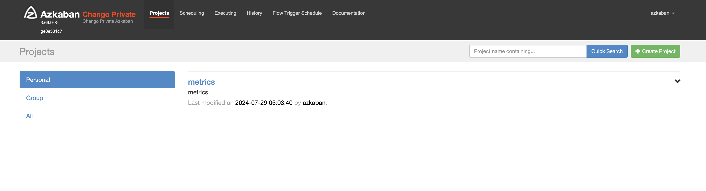
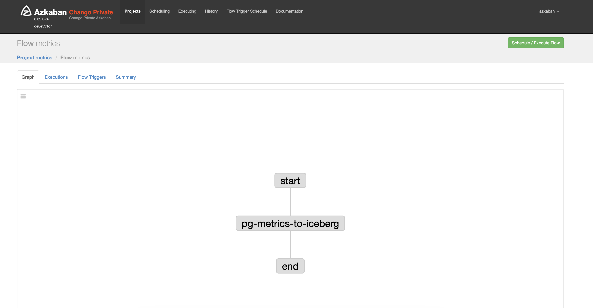
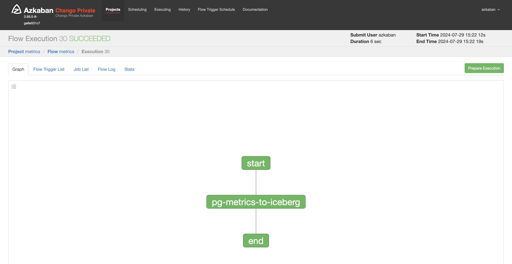
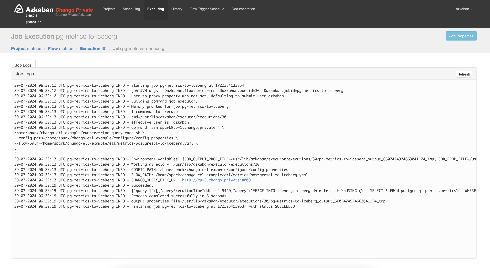
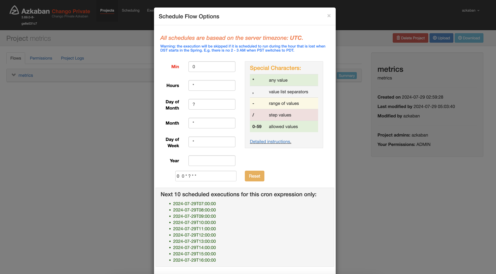

Run Trino ETL Jobs with Azkaban
Trino ETL queries can be sent to Chango Query Exec through REST to run ETL query jobs in trino with ease.

Here, we will learn how to integrate Trino ETL jobs with Azkaban workflow in Chango.
Passwordless SSH Connection from Azkaban Executor Nodes to Spark Node
We are going to use SSH to run remote shell files to run Trino ETL jobs. In order to access spark node from azkaban executor nodes without password prompt, follow this instruction.
Create Flow of Chango Query Exec
The following is an example flow file which will be sent to Chango Query Exec to run trino queries in trino through Chango Trino Gateway.
uri: <chango-trino-gateway-endpoing-without-scheme>
user: <trino-user>
password: <trino-password>
ssl: true
sslVerification: false
queries:
- id: query-0
description: |-
Create metrics table in iceberg if not exists.
depends: NONE
query: |-
CREATE TABLE IF NOT EXISTS iceberg.iceberg_db.metrics (
id bigint,
cpu_percent real,
memory_percent real,
memory bigint,
fqdn varchar,
host_group_name varchar,
comp_name varchar,
ts timestamp(6) with time zone
)
WITH (
format = 'PARQUET',
format_version = 2,
partitioning = ARRAY['hour(ts)']
)
- id: query-1
description: |-
Merge metrics from postgresql into iceberg table.
depends: query-0
query: |-
MERGE INTO iceberg.iceberg_db.metrics t
USING (
SELECT * FROM postgresql.public.metrics
WHERE format_datetime(ts, 'YYYY-MM-dd HH:mm:ss.SSS') < '#{ nowMinusFormatted(0, 0, 0, 0, 50, 0, "YYYY-MM-dd HH:mm:ss.SSS") }'
) s
ON t.id = s.id
WHEN MATCHED THEN UPDATE SET
id = s.id,
cpu_percent = s.cpu_percent,
memory_percent = s.memory_percent,
memory = s.memory,
fqdn = s.fqdn,
host_group_name = s.host_group_name,
comp_name = s.comp_name,
ts = s.ts
WHEN NOT MATCHED THEN INSERT (
id,
cpu_percent,
memory_percent,
memory,
fqdn,
host_group_name,
comp_name,
ts
) VALUES (
s.id,
s.cpu_percent,
s.memory_percent,
s.memory,
s.fqdn,
s.host_group_name,
s.comp_name,
s.ts
)
<chango-trino-gateway-endpoing-without-scheme>: URL of chango trino gateway endpoint without scheme.<trino-user>: trino user<trino-password>: trino password.
Table iceberg.iceberg_db.metrics will be created if not exists like this.
CREATE TABLE IF NOT EXISTS iceberg.iceberg_db.metrics (
id bigint,
cpu_percent real,
memory_percent real,
memory bigint,
fqdn varchar,
host_group_name varchar,
comp_name varchar,
ts timestamp(6) with time zone
)
WITH (
format = 'PARQUET',
format_version = 2,
partitioning = ARRAY['hour(ts)']
)
After that, data from postgresql.public.metrics will be moved to iceberg.iceberg_db.metrics incrementally using MERGE INTO.
Take also a look at the function of format_datetime(ts, 'YYYY-MM-dd HH:mm:ss.SSS') < '#{ nowMinusFormatted(0, 0, 0, 0, 50, 0, "YYYY-MM-dd HH:mm:ss.SSS") }'
which will be interpreted with appropriate time in Chango Query Exec. See Date Functions for more details.
Create Shell File to Send Flow Queries to Chango Query Exec
You can send flow queries to Chango Query Exec simply using curl.
The following is an example shell file called trino-query-exec.sh to send flow queries to Chango Query Exec.
#!/bin/sh
set -e
export CONFIG_PATH=NA
export FLOW_PATH=NA
for i in "$@"
do
case $i in
--config-path=*)
CONFIG_PATH="${i#*=}"
shift
;;
--flow-path=*)
FLOW_PATH="${i#*=}"
shift
;;
*)
# unknown option
;;
esac
done
echo "CONFIG_PATH: $CONFIG_PATH"
echo "FLOW_PATH: $FLOW_PATH"
export ACCESS_TOKEN=NA
export CHANGO_QUERY_EXEC_URL=NA
# get properties file.
while IFS='=' read -r key value
do
key=$(echo $key | tr '.' '_')
eval ${key}=\${value}
done < "$CONFIG_PATH"
ACCESS_TOKEN=${accessToken}
CHANGO_QUERY_EXEC_URL=${changoQueryExecUrl}
#echo "ACCESS_TOKEN: $ACCESS_TOKEN"
echo "CHANGO_QUERY_EXEC_URL: $CHANGO_QUERY_EXEC_URL"
# request.
http_response=$(curl -sS -o response.txt -w "%{response_code}" -XPOST -H "Authorization: Bearer $ACCESS_TOKEN" \
$CHANGO_QUERY_EXEC_URL/v1/trino/exec-query-flow \
--data-urlencode "flow=$(cat $FLOW_PATH)" \
)
if [ $http_response != "200" ]; then
echo "Failed!"
cat response.txt
exit 1;
else
echo "Succeeded."
cat response.txt
exit 0;
fi
In addition to shell file, you can create a configuration file called config.properties like this.
Then, you can run query exec runner shell file as follows, for example.
/home/spark/chango-etl-example/runner/trino-query-exec.sh \
--config-path=/home/spark/chango-etl-example/configure/config.properties \
--flow-path=/home/spark/chango-etl-example/etl/metrics/postgresql-to-iceberg.yaml \
;
Create Azkaban Project
You need to create flow file called metrics.flow of Azkaban like this.
---
config:
failure.emails: admin@your-domain.com
nodes:
- name: start
type: noop
- name: "pg-metrics-to-iceberg"
type: command
config:
command: |-
ssh spark@cp-1.chango.private " \
/home/spark/chango-etl-example/runner/trino-query-exec.sh \
--config-path=/home/spark/chango-etl-example/configure/config.properties \
--flow-path=/home/spark/chango-etl-example/etl/metrics/postgresql-to-iceberg.yaml \
;
"
dependsOn:
- start
- name: end
type: noop
dependsOn:
- "pg-metrics-to-iceberg"
This azkaban flow file shows DAG to run remote shell files which send query flow to Chango Query Exec.
Create a meta file called flow20.project for azkaban project.
All the files here created for now should be managed by source control system like git.
Create Azkaban project file as zip.
# package azkaban project file.
zip metrics.zip metrics.flow flow20.project
# move to /tmp.
mv metrics.zip /tmp
Upload azkaban project file on spark node on which Azkaban CLI is installed.
sudo su - azkabancli;
source venv/bin/activate;
azkaban upload \
-c \
-p metrics \
-u azkaban:<azkban-password>@http://cp-1.chango.private:28081 \
/tmp/metrics.zip \
;
You can also update azkaban project as follows.
sudo su - azkabancli;
source venv/bin/activate;
azkaban upload \
-p metrics \
-u azkaban:<azkban-password>@http://cp-1.chango.private:28081 \
/tmp/metrics.zip \
;
<azkban-password>is azkaban password. Default password isazkaban.
After uploading azkaban project, project is shown like this.
The flow of created azkaban project looks like this.

Run Azkaban Flow to run Trino ETL Queries
If you run azkaban flow, it looks like the following picture.

You can also see the executed job log.

Schedule Azkaban Project
In order to run Trino ETL jobs periodically, you need to schedule in Azkaban like this.
